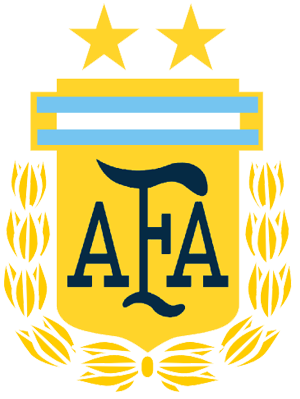
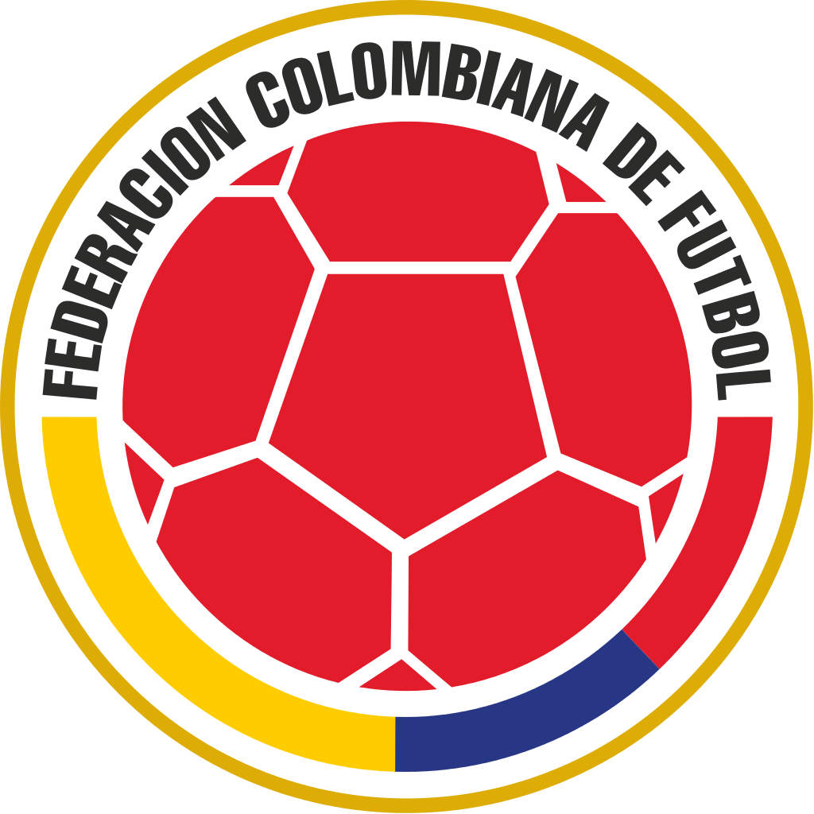
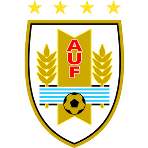

..............
Brazil can be known as the owners of the world cup after qualifying for all 20 world cups and have won it 5 times, runners up twice and third twice as well and fourth twice.
Brazil are very consistent and have the best player ever in the world, Nacimento(Pele). In recent years their form hasnt been excellent but they still show how good they are. They have hosted the world-cup twice and were the recent hosts.
Argentina have been very consistent over the years and have hosted the cup once and have won it twice one of which they hosted they have also been runners-up on three ocassions and were the runners-up in the most recent world cup which they were defeated by germany thanks to a late goal. They have had players such as Maradona and Messi.
Chile haven't been prolific in the world cup, they're best finish coming in 1962 the year that they hosted and came third. They have only managed qualification 9 times although being one of the first teams to compete. In the last two world cups they reachd the round of 16. Although they have established themselves as the kings of South America winning the last two copa Americas.
Colombia has a bad track record in the world cup , they have qualified for 5 out of 20. They have withdrawn, been banned by FIFA, and have failed to qualify on other occasions. Their highest finish coming in 2014 where they reached the quarter finals. They failed to qualify from 2002 - 2010.
They hosted the first world cup and managed to win it and they were the first to win a gold olympic medal in football. They have won twice. They did not enter the 1934 and 1938 and they also won the 1950 world-cup where they beat Brazil in the finals. They have placed fourth three times and only managed to reach the round of 16 in 2014. Some say their time has gone but some still still believe they can perform in world-cups to come.
Paraguay competed in the first world cup and got knocked out in the 1st round. They have qualified for 8 out of 20. Their best finish was in 2010 where they reached the quarter finals. They had consecutive 1st round finishes in the fifties.